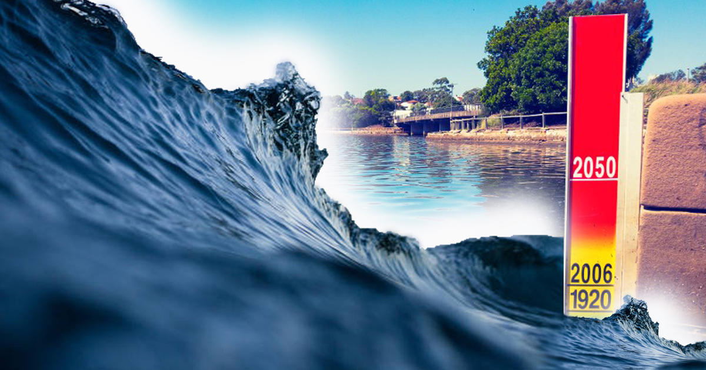
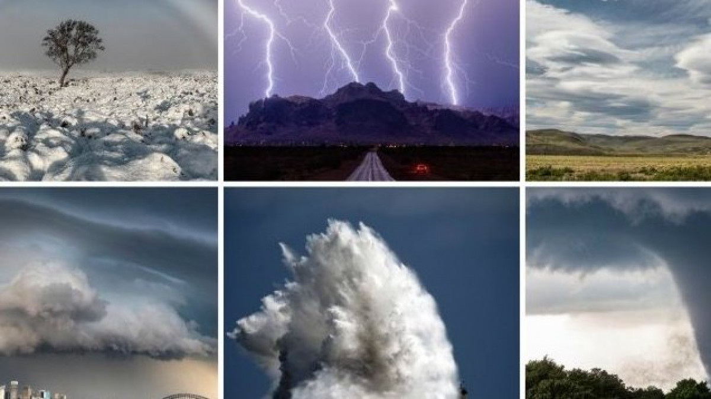
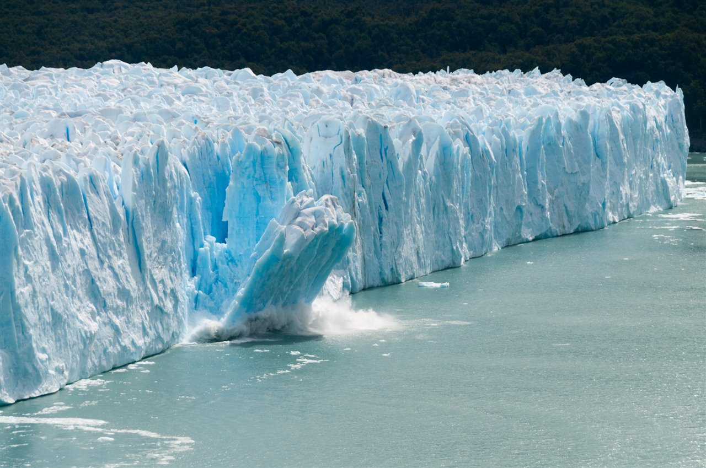

Impacto del Cambio Climático
Elevación del Nivel del Mar

La elevación del nivel del mar es uno de los impactos más evidentes del cambio climático en nuestros
ecosistemas costeros y áreas bajas. A medida que las temperaturas globales aumentan, los casquetes polares y
los glaciares se derriten, lo que contribuye al aumento del volumen del agua en los océanos. Además, el
calentamiento provoca la expansión térmica del agua marina.
Esta elevación del nivel del mar tiene efectos profundos y preocupantes. Las comunidades costeras se vuelven
más susceptibles a inundaciones, especialmente durante tormentas intensas. Los daños a la infraestructura, la
pérdida de tierras agrícolas y la intrusión de agua salada en acuíferos de agua dulce son algunas de las
consecuencias directas. Además, los ecosistemas costeros, como los humedales y las playas, también están en
riesgo debido a la erosióncostera acelerada.
Para abordar este desafío, se implementan estrategias de adaptación, como la construcción de defensas
costeras, la reubicación planificada de comunidades y la restauración de hábitats naturales que ayuden a
absorber el impacto de las inundaciones. La reducción de las emisiones de gases de efecto invernadero sigue
siendo una parte fundamental para abordar la raíz del problema y mitigar los efectos a largo plazo.
Eventos Climáticos Extremos

Los eventos climáticos extremos son fenómenos meteorológicos intensificados y frecuentes que resultan del
cambio climático. A medida que las temperaturas globales aumentan, la energía acumulada en la atmósfera y los
océanos se libera en forma de eventos más intensos y devastadores. Estos eventos incluyen tormentas más
fuertes, sequías prolongadas, inundaciones repentinas, olas de calor extremas y huracanes más potentes.
Los efectos de estos eventos climáticos extremos son variados y a menudo devastadores. Las comunidades
enfrentan daños materiales, la pérdida de vidas y la interrupción de los servicios básicos. La agricultura, la
infraestructura y los ecosistemas naturales son particularmente vulnerables. Además, estos eventos pueden
desencadenar crisis humanitarias y económicas, especialmente en regiones ya afectadas por la pobreza y la
falta de recursos.
La adaptación y la resiliencia son cruciales en la mitigación de los impactos de los eventos climáticos
extremos. Esto incluye la planificación urbana que considere la vulnerabilidad a inundaciones, la
implementación de sistemas de alerta temprana y la inversión en infraestructura resistente. Sin embargo, es
igualmente importante abordar las causas subyacentes de estos eventos al reducir las emisiones de gases de
efecto invernadero y trabajar en la mitigación del cambio climático a nivel global.
Derretimiento de Glaciares

El derretimiento de glaciares es un efecto visualmente impactante del cambio climático que está ocurriendo en
todo el mundo. A medida que las temperaturas aumentan, los glaciares que se han mantenido durante siglos están
experimentando una rápida disminución en su masa y volumen. Este derretimiento contribuye directamente al
aumento del nivel del mar y tiene implicaciones significativas para los ecosistemas y las comunidades
cercanas.
El agua liberada por el derretimiento de los glaciares se agrega a los océanos, lo que contribuye a la
elevación del nivel del mar y aumenta el riesgo de inundaciones en áreas costeras. Además, los glaciares
proporcionan suministros de agua dulce esenciales para muchas comunidades, y su pérdida puede tener un impacto
significativo en la disponibilidad de agua potable y la agricultura.
El derretimiento de glaciares también puede tener efectos indirectos en los ecosistemas circundantes. La
liberación repentina de grandes cantidades de agua puede causar deslizamientos de tierra y la creación de
nuevos lagos, lo que aumenta el riesgo de eventos catastróficos como inundaciones y deslaves. Además, la
pérdida de glaciares altera los patrones climáticos locales y puede afectar a la biodiversidad de la región.
Es crucial abordar el derretimiento de glaciares como parte de los esfuerzos globales para mitigar el cambio
climático. La reducción de las emisiones de gases de efecto invernadero y la implementación de estrategias de
adaptación son esenciales para frenar el ritmo de este proceso y para limitar los impactos a largo plazo en
los ecosistemas y las comunidades vulnerables.